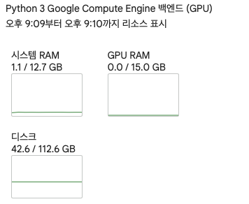
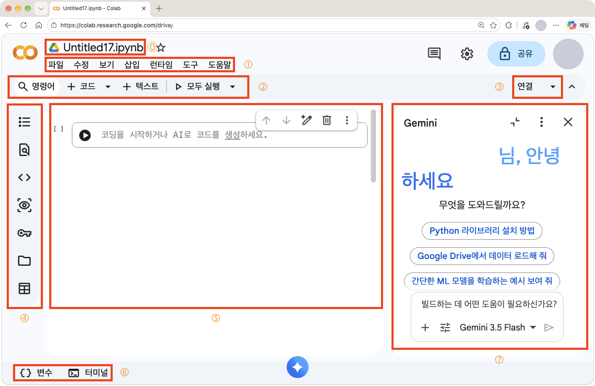

노트북을 활성화하면 Google의 컴퓨팅 환경에 임의의 가상머신(Virtual Machine, VM)이 만들어지고, 이것이 독립된 컴퓨터 한 대처럼 작동한다. 런타임 설정에 따라 GPU, RAM, 디스크 등을 할당받는다. 무료 계정은 지속 시간이 일정하지 않지만 다음 정도의 자원을 제공한다.
자원
무료 계정의 제공 수준
GPU
T4, VRAM 약 15GB
시스템 RAM
약 12GB
디스크
약 100GB

무료 계정으로 GPU를 쓸 때의 리소스 표시
02
화면 구성

번호는 아래 표의 항목을 가리킨다. 개인 정보는 가렸다.
번호
영역
하는 일
⓪
파일 제목
눌러서 파일 이름을 바꾼다. 기본 저장 위치는 Google Drive의 “Colab Notebooks”다.
①
상단 메뉴
파일, 셀, 런타임 작동 환경 등을 다루는 기본 메뉴다.
②
노트북 메뉴
명령어 바로가기, 코드 셀과 텍스트 셀 추가, 실행 단추가 있다.
③
연결
연결 정보를 보여 주고, 현재 런타임 변경과 Google의 다른 환경 연결 등을 지원한다. 03절에서 다룬다.
④
좌측 사이드바
텍스트 목차, 찾기, 코드 스니펫(미리 만든 코드 조각), Secrets(환경 변수 설정), 파일, 데이터 탐색기 등을 접고 펴는 사이드바다. 파일 항목은 현재 런타임이 제공하는 드라이브 경로를 보여 주며, Google Drive를 별도 경로로 연결할 수 있다.